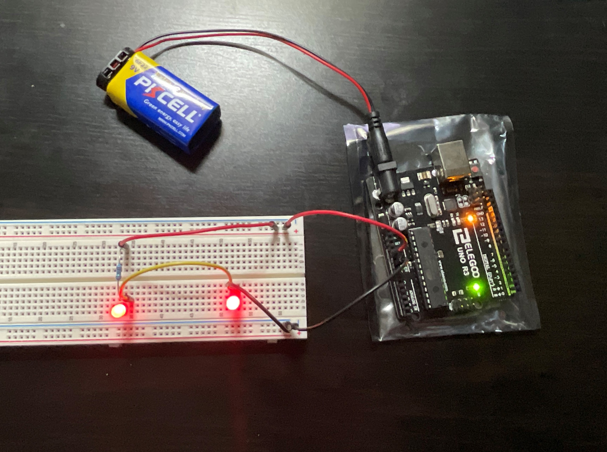
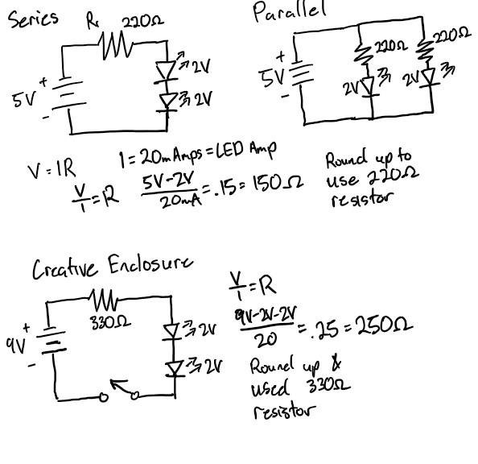
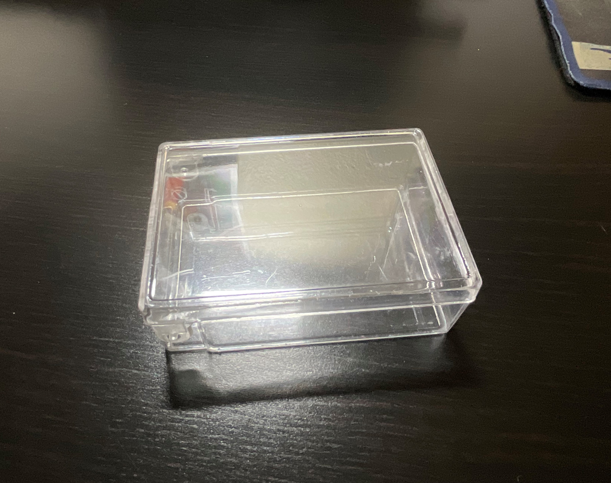
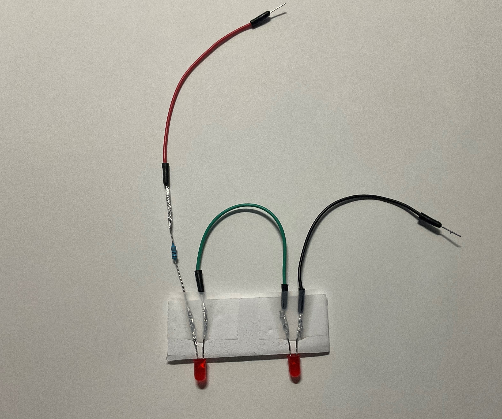
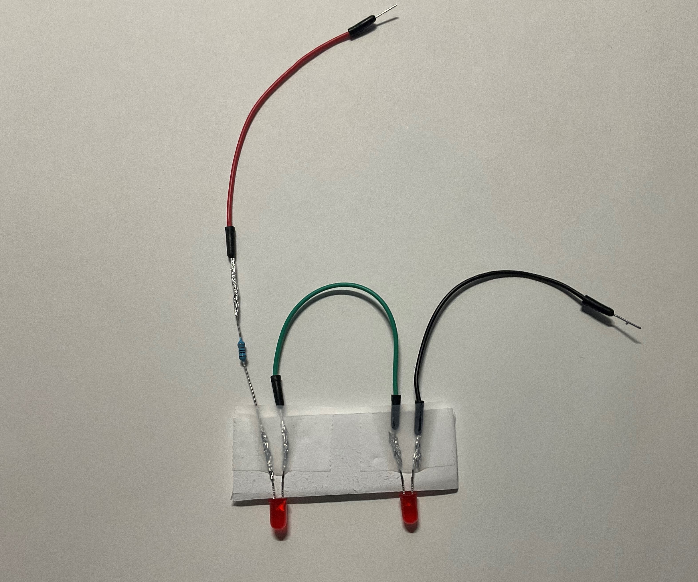
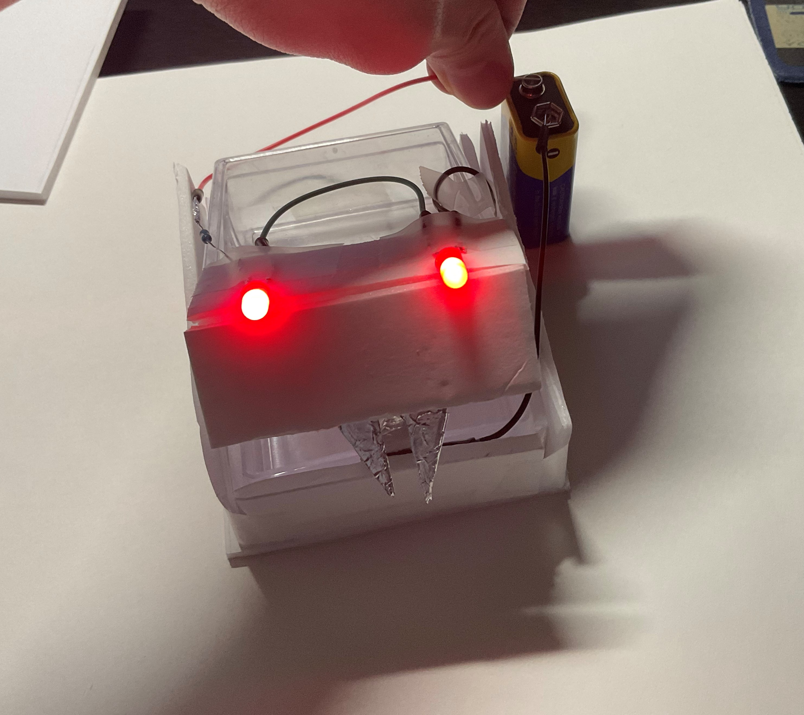
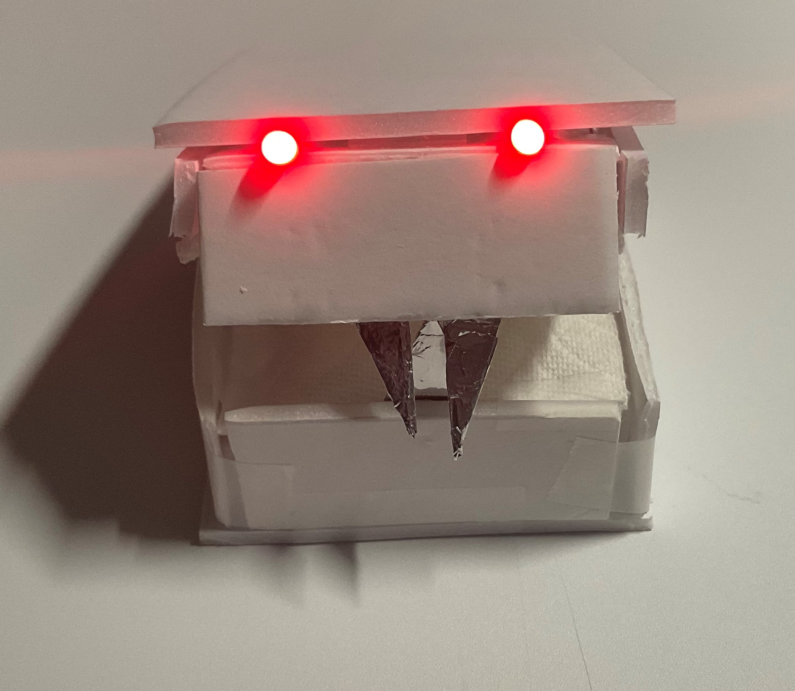
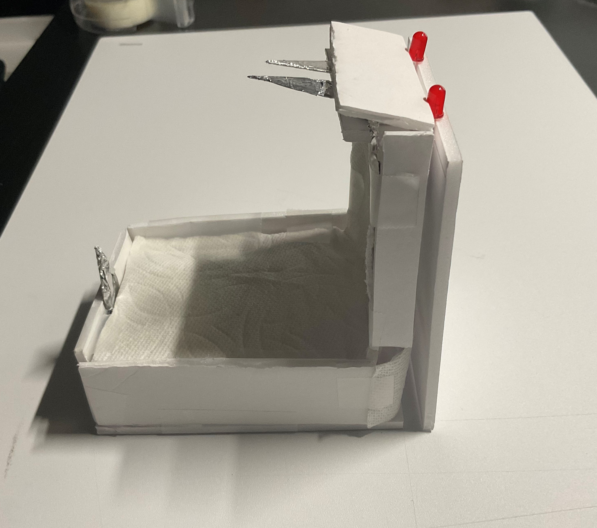

Basic Electronics
Series
Parallel
Schematics
DIY Switch
For the switch, I was looking through my drawer and used the first thing that I saw that I thought could work as a switch. It ended up being a Xacto knife. So looking at the assignment with the creative enclosure I ended up wanting to use the knives as teeth to create a little monster.
Creative Enclosure
For the start of this, I used a thumbtack box as housing for everything. Initially, I wanted to use the Arduino, but there was no room to plug in the power so I ended up having to uses the 9V battery. This required a change of the initial resistor used to make sure the LED didn't burn out.
When wiring some issues started to pop up as the connection was dropping and the LED didn't consistently turn on. The solution for this ended up being wrapping the wires with some tin foil to make sure the connection didn't drop.
 

Once that was done I attached the wires to the box and put some paper board around the box. I also made some adjustments to the switch to make sure that the connection was more consistent.

I finished wrapping the box with the paper board and some cloth in the middle to make sure that the battery inside was no longer visible.
 